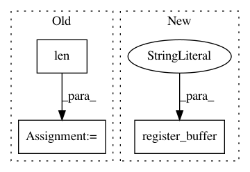

5b3e337c7a67ea470dec1a4987eefb12168783f6,gpytorch/kernels/grid_interpolation_kernel.py,GridInterpolationKernel,__init__,#GridInterpolationKernel#Any#Any#Any#Any#,12
Before Change
self.grid_bounds = grid_bounds
if grid is None:
grid = torch.zeros(len(grid_bounds), grid_size)
for i in range(len(grid_bounds)):
grid_diff = float(grid_bounds[i][1] - grid_bounds[i][0]) / (grid_size - 2)
grid[i] = torch.linspace(grid_bounds[i][0] - grid_diff,
grid_bounds[i][1] + grid_diff,
After Change
self.base_kernel_module = base_kernel_module
self.grid_size = grid_size
self.register_buffer("grid", grid)
self.register_buffer("_inducing_points", inducing_points)
def train(self, mode=True):
if hasattr(self, "_cached_kernel_mat"):
del self._cached_kernel_mat
In pattern: SUPERPATTERN
Frequency: 3
Non-data size: 3
Instances
Project Name: cornellius-gp/gpytorch
Commit Name: 5b3e337c7a67ea470dec1a4987eefb12168783f6
Time: 2017-11-13
Author: gpleiss@gmail.com
File Name: gpytorch/kernels/grid_interpolation_kernel.py
Class Name: GridInterpolationKernel
Method Name: __init__
Project Name: dpressel/mead-baseline
Commit Name: 1fd1fbb4b677f10d8e2181e7176daabad7327a72
Time: 2018-11-19
Author: blester125@users.noreply.github.com
File Name: python/baseline/pytorch/tagger/model.py
Class Name: TaggerModelBase
Method Name: create
Project Name: pytorch/fairseq
Commit Name: bf54551cafa13678c0254d2c20354cc026cc0bac
Time: 2021-01-20
Author: myleott@fb.com
File Name: examples/linformer/linformer_src/models/linformer_roberta.py
Class Name: LinformerEncoder
Method Name: __init__